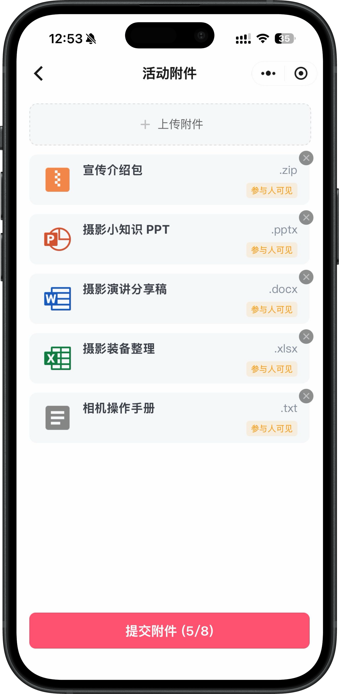
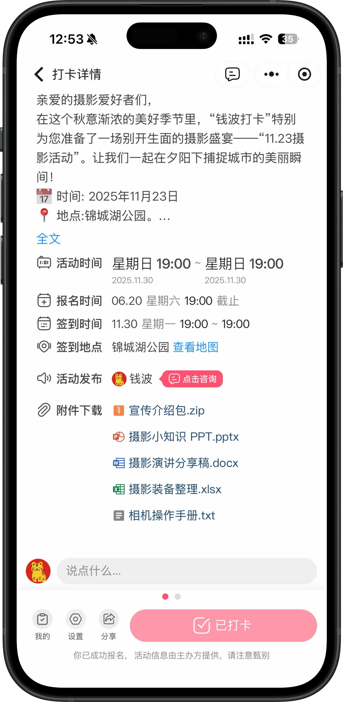

一场活动顺利发布之后，组织者经常还要继续处理一个小麻烦：资料怎么发？
活动介绍包要发一次，分享嘉宾的 PPT 要发一次，设备清单、操作手册、报名说明也可能要反复补发。资料一多，就很容易散落在群聊、网盘链接和临时消息里。
对参与人来说，最常见的问题是：活动页面找得到，资料却要去群里翻。消息刷过去以后，后来报名的人又要重新问一遍。
为了解决这个问题，喜多上线了活动附件管理。以后，活动相关资料可以直接跟着活动走。
在活动附件页面中，管理员可以为活动上传并管理相关文件。
宣传介绍包、摄影小知识 PPT、演讲分享稿、装备整理表、相机操作手册等资料，都可以按文件形式添加到活动里。页面会展示文件名称、文件类型和当前附件数量，管理员也可以随时移除不需要展示的文件。

图 1：管理员可以在活动附件页面上传、查看和管理活动资料。
这样一来，活动资料不再需要单独建网盘目录，也不需要靠群公告反复补充。组织者只要在活动配置时把资料整理好，后续参与人就能在活动页面里找到。
对参与人来说，使用方式很简单。
进入活动详情页后，在活动时间、报名时间、签到地点等信息下方，就可以看到“附件下载”。不同类型的文件会以清晰的图标和文件名展示，参与人按需点击即可获取资料。

图 2：参与人可在活动详情页查看并下载本活动相关附件。
活动前，可以提前下载宣传资料、准备清单或课程讲义；活动中，可以快速找到操作手册；活动后，也可以回到活动详情页查看分享稿和复盘资料。
活动附件管理看起来是一个小功能，但它解决的是活动运营里很实际的问题。
以前，资料经常依赖临时转发：有人问一次，组织者补发一次；群消息一多，参与人还要反复搜索。
现在，资料可以跟活动信息放在一起。参与人不用到处找，管理员也不用不断重复解释“资料在哪里”。
这个能力尤其适合：
• 摄影、课程、沙龙等需要课件或讲义的活动；
• 线下活动需要提前准备物品清单的场景；
• 需要分发宣传包、合作资料或报名说明的活动；
• 活动结束后希望沉淀分享稿、复盘资料的组织者。
从报名、打卡到资料下载，参与人围绕一场活动需要的信息，都可以更集中地留在喜多里。
少一点群里翻找，多一点清楚交付。
喜多 -- 私域活动运营专家